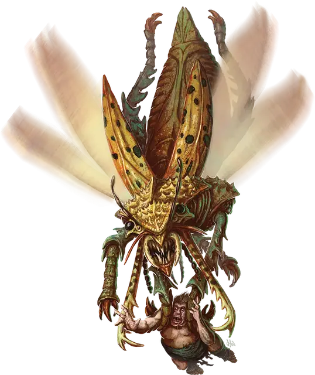

Гигант
Gigant
Громадный Монстр, без мировоззрения

Класс Доспеха 17 (природный доспех)
Хиты 325 (21к20 + 105)
Скорость 50 футов, летая 80 футов, копая 50 футов
| мод | спас | ||
|---|---|---|---|
| СИЛ | 24 | +7 | +7 |
| ЛОВ | 14 | +2 | +8 |
| ТЕЛ | 21 | +5 | +5 |
| мод | спас | ||
|---|---|---|---|
| ИНТ | 3 | −4 | −4 |
| МДР | 14 | +2 | +8 |
| ХАР | 11 | +0 | +0 |
Навыки Восприятие +8
Чувства тёмное зрение 120 футов, пассивное Восприятие 18
Опасность 20 (25000 опыта)
Бонус мастерства +6
Особенности
Устойчивый к заклинаниям панцирь. Гигант с преимуществом совершает спасброски против заклинаний, и любое существо, которое совершает атаку заклинанием, совершает эту атаку с помехой.
Действия
Мультиатака. Гигант совершает одну атаку Жвалами и две атаки Когтями.
Жвалы. . Рукопашная атака оружием: +13 к попаданию, досягаемость 10 футов, одно существо. Попадание: 21 (4к6 + 7) рубящего урона, и цель становится схваченной (Сл высвобождения 17). Пока захват не закончится, цель получает 21 (4к6 + 7) рубящего урона в начале каждого хода гиганта. Пока гигант держит цель схваченной, он не может атаковать Жвалами другие цели.
Когти. . Рукопашная атака оружием: +13 к попаданию, досягаемость 20 футов, одна цель. Попадание: 17 (3к6 + 7) рубящего урона, и цель подтягивается на 10 футов по прямой к гиганту.
Чешуйчатая пыль (перезарядка 5-6). Гигант выпускает волшебную пыль со своих крыльев 30-футовым кубом, с центром на себе. Каждое существо в этой области должно совершить спасбросок Телосложения Сл 19, получая 45 (10к8) урона ядом в случае провала или половину этого урона в случае успеха. В случае успеха или провала существо становится отравленным на 1 час. Будучи отравленным таким образом, существо не может восстанавливать хиты.
Бонусные действия
Жужжание. Гигант издает ужасный гудящий звук, быстро взмахивая крыльями. Каждое существо в пределах 10 футов от гиганта должно преуспеть в спасброске Телосложения Сл 19, иначе получит 10 (3к6) урона звуком и становится недееспособным до конца своего следующего хода. После этого гигант может переместиться на половину своей скорости полёта.
Описание
Гигант — это исполинское насекомоподобное существо, которое считается предвестник рока, защитником природы и божественным посланником с таинственным предназначением. Великаны считают их чумой, поскольку гиганты предпочитают великанов иной пище. Некоторые великаны утверждают, что гиганты создаются странной магической аурой, которая окружает исполина [gargantua].
Гигант напоминает огромного жука с конечностями, оканчивающимися острыми когтями. Он использует свои когти, чтобы притягивать существ к своим огромным жвалам, которые достаточно сильны, чтобы отнести великана в гнездо гиганта на съедение.
Крылья гиганта обычно сложены под панцирем, но это быстрое насекомое также может бить крыльями, издавая ужасный звук или разбрасывая ядовитую пыль.